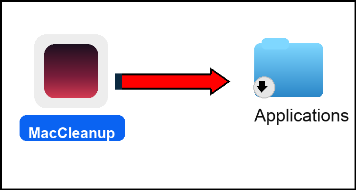

📥 Download & Install: This is a standalone Mac app. Once downloaded and installed, it runs entirely on your Mac. No server, no cloud, just your files on your computer.
📥 Download MacCleanup
DMG Installer • macOS 10.13+ • Runs Locally on Your Mac
📋 Simple Installation Guide
Step 1: Download
Click the download button above to get the MacCleanup DMG file.
Step 2: Drag to Applications
- Double-click the downloaded
MacCleanup-1.0.dmg file to open it
- You'll see a window with
MacCleanup.app and an Applications folder
- Drag
MacCleanup.app to the Applications folder

Step 3: Open from Applications
- Open your
Applications folder
- Double-click
MacCleanup.app to launch it
- Your browser will automatically open
Step 4: Setup Preferences
A setup page will open asking for your preferences:
- Preferred cloud storage (Dropbox, iCloud, Google Drive, OneDrive, or None)
- What storage you're already using (select all that apply)
- External SSD (if you have one - detected automatically)
- Default starting page (Cleanup Dashboard or Setup Page)
Answer the questions and click "Save Configuration".
Step 5: Start Cleaning Up
Once setup is complete, you can:
- Click "Preview Cleanup" to see suggested actions
- Review files that should be deleted, moved, or archived
- Select the actions you want (using checkboxes)
- Click "Run Cleanup" to execute
⚙️ What MacCleanup Does
This app helps you:
- Look at all your files and suggest files that should be deleted
- Identify old versions that could be archived
- Create folders with a better workflow
- Come up with a storage strategy using your Desktop, external drives, and cloud storage
The app organizes YOUR files on YOUR Mac. It doesn't access anyone else's files or any server. Everything runs locally on your computer.
🔄 Using MacCleanup Later
Every time you want to clean up your files:
- Open
MacCleanup.app from your Applications folder
- Your browser opens automatically
- Click "Preview Cleanup" to see what needs organizing
- Select the actions you want and click "Run Cleanup"
That's it! The app runs locally on your Mac - no internet connection needed, no server, just your files.
🎯 Smart Organization
Automatically categorizes and organizes files into the right folders.
🗑️ Auto Cleanup
Deletes junk files and archives old files automatically.
☁️ Cloud Integration
Works with Dropbox and iCloud Drive seamlessly.
📊 Visual Dashboard
Web-based interface for easy file management.